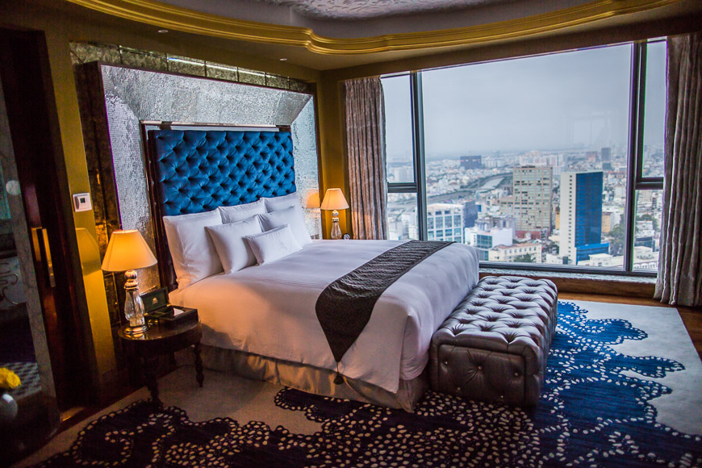
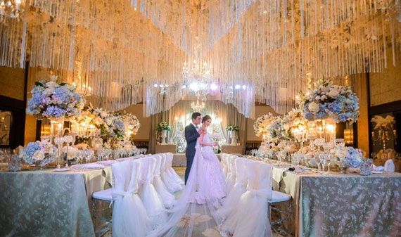
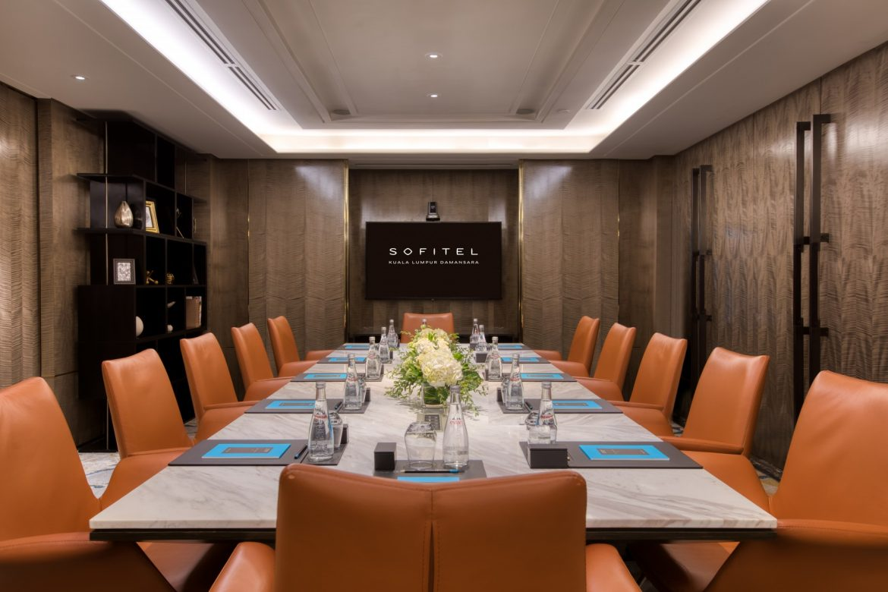

Meera Star Kathmandu—the best luxury hotel in Kathmandu—is located near the holiest Buddhist shrine and offers 280 rooms including seven suites and 35 Regency Club rooms. The rooms are designed to meet guests’ comfort and requirements, with a serene atmosphere and free Wi-Fi internet service. Featuring spacious interiors and conveniences that will make your stay memorable, each room is equipped with flat-screen televisions, separate walk-in showers, and tea/coffee-making facilities.
Meera Star Kathmandu offers the finest dining experience at its most exquisite restaurants. A variety of fine cuisines are offered inside the hotel each showcasing its own unique style and authenticity by our master chefs.

Whether you are dreaming of an intimate gathering or a grand event, plan on Meera Star Kathmandu hotel for the picture-perfect wedding. Our banquet halls can be tailored as per the guest’s requirement.
Host your meetings and events in the best hotel in Kathmandu.
